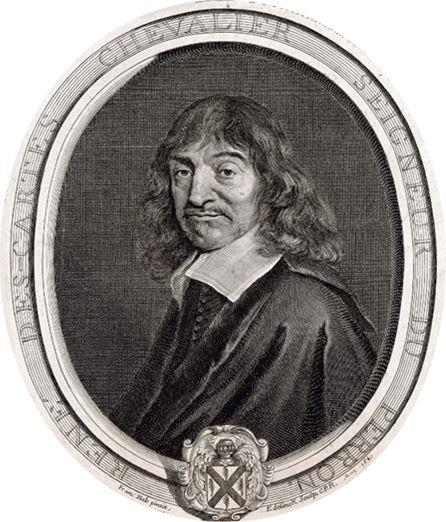
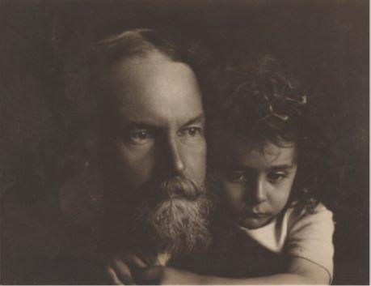
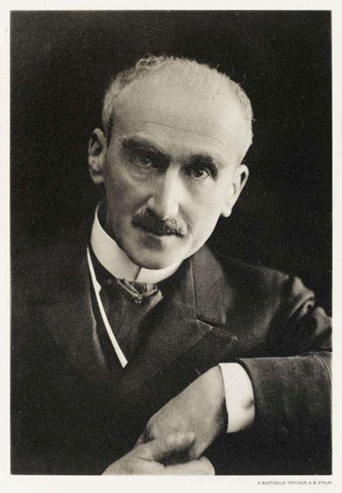
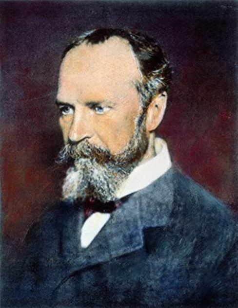
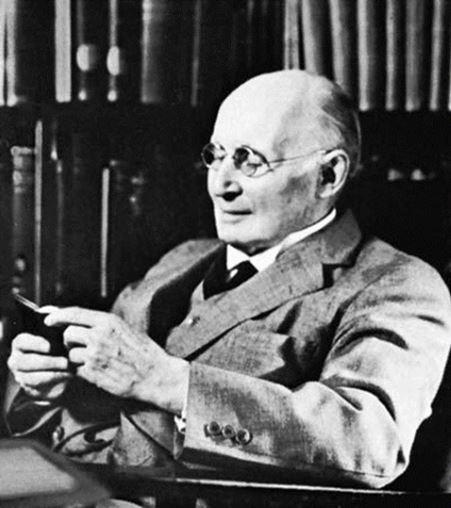
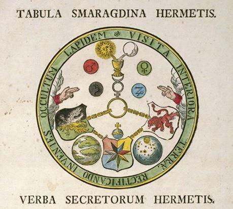
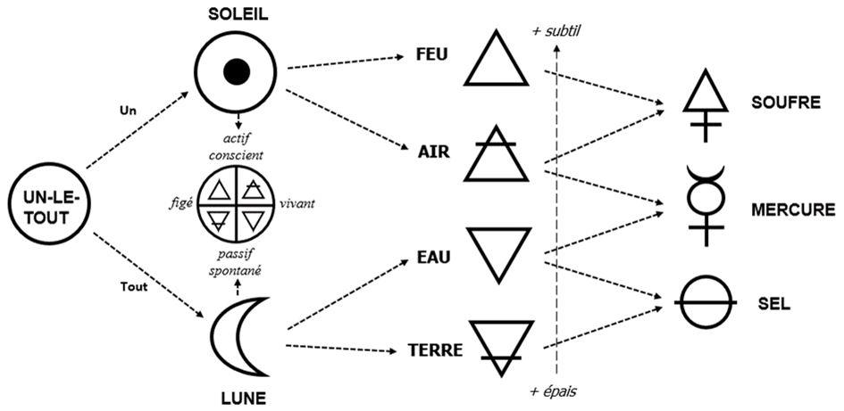

Quels sont les enjeux philosophiques de l’interprétation alchimique, par Jung, des processus inconscients ? Dès lors que l’on est conscient du prix à payer pour manipuler les abstractions, il devient possible de contraster, d’une part, l’onto-théologie de la substance et de la technique, et, d’autre part, l’athéologie processuelle de l’événement et de la pratique. Ceci est d’autant plus expédient lorsqu’il s’agit d’approcher la phénoménologie de la conscience : tandis que le substantialisme cherche à promouvoir la thèse dualiste et ne peut circonscrire ses contradictions, le processualisme, au contraire, avance la thèse d’un monisme pluraliste, qui est probablement la seule compatible avec l’interprétation jungienne de l’alchimie.
1. La bifurcation orientaliste (Bergson et Whitehead)
Comment l’histoire des idées peut-elle jeter quelque lumière sur la question de l’être parmi les choses en Occident et en Extrême-Orient 1? Force est de constater que la comparaison entre l’Occident et l’Orient procède d’une forme particulière de la dialectique de la raison.
La dialectique de la raison est connue depuis les Présocratiques : d’une expérience donnée, c’est-à-dire ponctuelle et indivise, la raison extrait un aspect frappant ou utile, l’« objectifie », le compare à ce qu’il n’est pas, ou aurait pu être, voire aurait dû être, pour ensuite tenter le chemin inverse de la réunification de l’objectifié et de ses limbes subjectifs en un tout cohérent 2. L’opération peut être dite réussie lorsque l’expérience ponctuelle est devenue répétable, ou lorsque son idiosyncrasie fait maintenant sens. On est passé du senti et du ressenti, au pris et au compris, parfois au surpris.
Depuis le XIXe siècle, et suite aux travaux de Spencer, Peirce, Bergson, James et Whitehead (l’épistémologie évolutionniste, qui enfantera l’épistémologie génétique de Piaget, s’origine dans les Principles of Psychology de Spencer, publiés en 1855), on a tendance à voir dans ce double processus une contingence liée à l’évolution biologique et culturelle de l’humanité : l’appareil cognitif et spéculatif est le fruit d’une longue interaction avec notre environnement immédiat, et cette objectification possède des vertus adaptatives indéniables.
C’est donc bien sûr par abstraction qu’on identifie ce que l’on croit être le trait fondamental d’une culture polymorphe, et c’est encore par abstraction qu’on met en œuvre, souvent implicitement, des méta-critères rendant la comparaison interculturelle possible. S’il faut nécessairement chercher la simplicité, il est tout aussi impératif de s’en défier 3. Toute méthode, insiste Whitehead, n’est qu’une simplification heureuse 4 — et, d’un point de vue empirique, on ne rase jamais gratis. (« Entia non sunt diminuenda sine necessitate 5. »)
2. Être parmi les choses et devenir réticulaire (Parménide et Pythagore)
On peut en conséquence se hasarder à soutenir un contraste général qui permet de naviguer dans l’histoire des idées : on aurait, d’une part, une pensée théologique de l’être, de la substance et de la technique consciente ; et, d’autre part, une (non-)pensée athéologique du devenir, du processus et de la pratique inconsciente. Qu’est-ce à dire ?
Bien que la philosophie occidentale soit parcourue par les deux modes de pensée que nous venons de mentionner, ne fût-ce que parce que le quotidien est vécu à la fois comme substantiel et processuel, elle est généralement comprise sur le mode de la substance, tandis que les arguments processuels sont minimisés, voire combattus. Pour fixer les idées, disons que l’impératif du choix entre être et devenir s’est cristallisé chez Parménide, au Ve siècle avant notre ère.
L’argument est essentiellement logique (l’être ne peut provenir du non-être), et il fera la renommée de Zénon. Mais il est également moral : on ne peut poursuivre deux chemins à la fois ; il faut choisir entre Lumière et Ténèbres, vice et vertu, facilité et ascèse, vie séculière et contemplation, « vita activa » et « vita contemplativa ».
Du reste, c’est ici que pourrait intervenir Janus, qui est non seulement le « Maître du triple temps » (passé, présent, futur), mais aussi le « Maître des deux voies auxquelles donnent accès les deux portes solsticiales, ces deux voies de droite et de gauche […] que les pythagoriciens représentaient par la lettre Y, et que figurait aussi, sous une forme exotérique, le mythe d’Hercule entre la vertu et le vice 6 ».
Cet argument onto-logique et onto-éthique est rapidement devenu onto-théologique. Il faut ici évoquer le Timée de Pythagore et de Platon, qui met en scène un démiurge grand architecte (pas un « Dieu » créateur) afin de comprendre la nature et la structure du monde. Or, la métaphore qui est utilisée est technique : le démiurge se comporte à la manière d’un artisan qui façonne une matière extérieure à l’aide de formes qu’il s’approprie. Sa liberté est doublement limitée : d’une part, la résistance de la matière doit être vaincue ; d’autre part, les idées ne sont pas toutes compossibles (un problème qui a été particulièrement exploré par Leibniz).
Timée, traduit en latin par Chalcidius, vers le VIe siècle. Manuscrit du Xe siècle.
La pensée orientale, pour sa part, est communément introduite symétriquement, c’est-à-dire à l’aide d’une simplification inverse.
Son fondement est le devenir, tandis que les manifestations de l’être se pensent comme effets de surface de fluctuations profondes. De « dieu » il n’est pas question, et la métaphore artisanale est donc nulle et non avenue en ontologie. La pratique remplace la théorie : on ne pense plus l’agir sur le mode de la liberté-option, mais on agit sans penser, on fulgure plutôt qu’on ne crée. Ce genre de renversement hante les philosophes occidentaux du processus. C’est ainsi que Bergson contraste la pseudo-liberté, déterminée par des alternatives préexistantes, et la vraie liberté, qui est incommensurable avec quelque idée que ce soit 7. Pour le dire différemment : la liberté dont on nous vante quotidiennement les mérites — celle du choix rationnel, réfléchi, opéré après avoir pesé le pour et le contre, etc. — est une liberté déterminée ; quand bien même serait-elle efficace, elle n’en demeure pas moins un simulacre. La vraie liberté se manifeste lorsqu’une décision tombe d’elle-même, à la manière d’une flèche qui se décoche toute seule — et qui pourrait bien après tout être celle de Zénon 8.
On en arrive ainsi au contraste psychologique qui est décisif pour notre discussion : la pensée de l’être et de la substance est aussi celle du cogito et de l’ego ; la pensée du devenir et du processus considère le premier comme accidentel, et le second comme fondamentalement illusoire, ces deux contingences étant strictement corrélées : conceptuellement, c’est la pensée qui crée le concept, c’est le cogito qui pose l’ego.
Existentiellement, dès que le flux de la pensée rationnelle se tarit, l’évidence égoïque se dissout. Un minimum d’introspection le suggère, et les pratiques religieuses (au sens large) ne disent rien d’autre — seuls les dogmes peuvent prétendre le contraire.
Lorsque Descartes choisit comme fondement le « je suis une chose qui pense », une chose qui connaît car elle se connaît, il cèle l’avènement d’un sujet séparé de son environnement, en compétition avec ses semblables, et en guerre avec la nature.
Que dit pour sa part l’Orient (lato sensu) ? « Le moi qui se vide pour voir les choses ; le moi qui s'immerge au sein des choses ; le sans-mental et la spontanéité naturelle selon la Loi : tel est, je crois, l'état auquel nous, Japonais, nous aspirons fortement 9. » Le « je suis » est remplacé par un « il y a », ou, à la limite, par un « tu es, donc je suis 10» ; l’ « être » cède la place au « devenir » ; et le sens de l’histoire au pur donné. Ou encore : il y a un processus agnostique, un devenir réticulaire polymorphe et anhistorique.
Enfin, au nombre des contrastes qui sont susceptibles d’éclairer les tendances qui se manifestent antithétiquement dans la tentation de l’orientalisme, il faut mentionner la différence entre orthodoxie et orthopraxie. La première exige que le fidèle admette un jeu de normes ou de valeurs et s’y conforme aveuglément. Il lui est certes possible de comprendre tangentiellement le canon, mais son adoption demande un saut, le « saltus fidei ». La seconde n’entraîne aucune adhésion intellectuelle ; elle demande uniquement le respect de règles de conduite qui sembleront farfelues à ceux qui sont étrangers à la pratique en question. L'exactitude rituelle possédant une importance suréminente, le formalisme est ici extrêmement pointilleux. Curieusement, l’exemple qui nous est le plus proche culturellement est romain 11. On retrouve le même différentiel entre la contemplation raisonnée et l’action toujours potentiellement déraisonnable.
Fondamentalement, on ne peut faire l’économie d’une pensée de l’inconscient pour comprendre la conscience.
3. Du réticulum subliminal aux choses conscientes (Myers et James)
Comment Jung et Pauli ont-ils redistribué ces cartes conceptuelles ? En prenant grand compte des processus inconscients émergents. On n’examinera pas ici la question du lien filial, conceptuel et symbolique qui lie Freud et Jung. Freud n’a rien découvert et tout inventé, ce qui signale quand même une propension pour la pensée plus remarquable que celle de Lacan (qui n’a, lui, rien inventé, le plagiat lui ayant amplement suffi pour asseoir son emprise sur le paysage clinique français), mais sa pertinence pour notre propos est épiphénoménale 12.
S’il y avait une figure historique à revisiter d’urgence — mis à part Pierre Janet (1859–1947) —, ce serait bien entendu Frederick W. H. Myers (1843–1901), qui est crucial pour comprendre les enjeux de la pensée jamesienne. Selon Flournoy, qui a influencé directement Jung, le génie fondateur de la psychologie n’est pas Freud, mais Myers 13.
Les limes du Zeitgeist délibérément ignorées par Freud sont en effet du plus grand intérêt. Les qualifier n’est pas difficile : tout ce qui pouvait remettre en cause son matérialisme intrapsychique et son pessimisme clinique, c’est-à-dire en fin de compte tout ce qui se rapporte, de près ou de loin, à l’exercice de l’hypnose pratiquée par Bernheim et Liébault à Nancy. Le spiritualisme était aussi malvenu pour ce neurologue monomaniaque qu’une approche systémique ou qu’une vision optimiste de l’inconscient. Un bel exemple de croque-mitaine nous est offert par Myers, qui combinait effrontément ces trois tares 14. Non seulement la totalité de son œuvre cherche à dépasser la vision étriquée du matérialisme triomphant, mais elle ouvre la focale psychologique aux interactions personnelles et transpersonnelles en considérant l’ « inconscient » comme une source vive, non comme une poubelle. De fait, son concept d’ « esprit subliminal (« subliminal mind », c. 1885) est crucial pour comprendre les avancées philosophiques de James et de Bergson, ainsi que l’éthos des chercheurs associés à la Society for Psychical Research (fondée à Londres en 1883) et, par transitivité, de ceux associés à Jung : R. M. Bucke, Théodore Flournoy, Henry Sidgwick, Edmund Gurney, Charles Richet, F.C.S. Schiller, Gilbert Murray, et, last but not the least, Pierre Janet…
L’intérêt pour le paranormal en général, et le spiritisme en particulier, est capital pour au moins deux raisons. D’une part, le territoire de la psychologie et de la philosophie se trouve étendu ; d’autre part, quelle que soit la véracité des thèses spiritistes, les conséquences de cette extension sont remarquables pour la compréhension de la conscience. On redécouvre, en effet, toute une palette d’états de conscience, à la fois au sens où on peut traverser, au cours d’une même journée, un large spectre conscientiel, et au sens où différents « états » peuvent co-exister.
4. La conscience par les filtres (Bergson et James)
Le problème se présente de la façon suivante : dès lors que l’on refuse de penser la conscience comme une substance pour lui préférer une approche processuelle et génétique, il faut mettre en scène un mécanisme (parler d’ « organisme » serait plus approprié) rendant compte de son surgissement continu à partir de la simplification d’un donné complexe. Notons bien que le vrai défi n’est pas de mettre en scène un simple crible associatif qui construirait notre réalité à partir d’atomes d’expérience, mais de faire vivre un organisme en croissance préhensive (Whitehead dirait aussi « en concrescence »).
C’est ici qu’intervient la théorie de la filtration. La science psychologique naissante doit tout au concept de seuil formalisé par Herbart (1824) et consorts 15, et repris, dans les années 1889–1895, par Myers 16. Avec la théorie de l’action réflexe de Hall (1832) 17, qui conduisit aux fameuses expériences de Pavlov sur les réflexes conditionnés et conditionnels (1890–1900), on obtient une description complémentaire de la nature de la perception : tout n’est pas perçu ; et tout ce qui est perçu n’est pas perçu consciemment.
L’expression des conséquences philosophiques ne se fit pas attendre. Dès Matière et mémoire (1896), Bergson soutient la thèse de la différence de degré — pas de la différence de nature — entre le cerveau et la moelle épinière18. Le cerveau travaille comme un détendeur : de la même manière que le détendeur mécanique permet au scaphandrier de respirer un mélange gazeux à la pression adéquate, le cerveau offre à la pensée des expériences triées organiquement sur le volet de leur pertinence adaptative. Plus précisément : la fonction du cerveau n’est pas à proprement parler de produire la conscience, mais de limiter le flux torrentiel de l’expérience subliminale afin de permettre l’agir 19.
Bergson propose la métaphore du central téléphonique afin de préciser sa vision : « Le cerveau ne doit donc pas être autre chose, à notre avis, qu'une espèce de bureau téléphonique central : son rôle est de “donner la communication”, ou de la faire attendre. Il n'ajoute rien à ce qu'il reçoit ; mais comme tous les organes perceptifs y envoient leurs derniers prolongements, et que tous les mécanismes moteurs de la moelle et du bulbe y ont leurs représentants attitrés, il constitue bien réellement un centre, où l'excitation périphérique se met en rapport avec tel ou tel mécanisme moteur, choisi et non plus imposé 20. »
En choisissant de porter son attention sur un donné perceptif plutôt qu’un autre, le cerveau peut reporter l’action qui aurait pu être immédiate, sur le mode de l’action réflexe. Hésitation et choix sont nécessairement conscients 21.
Dans l’état de conscience « normal », le sujet éprouve un contenu sélectionné, c’est-à-dire que la plupart des données de son expérience mondaine restent subliminales. Dès que le processus de sélection est modifié, dès que le seuil du « subliminal » est abaissé, on obtient un état de conscience « altéré » qui est parfois qualifié de « mystique ». Ce n’est donc pas dans ce cadre que l’on peut parler d’hallucinations ou alors il faut, avec Bergson, écrire un peu cavalièrement « hallucinations véridiques ». On perçoit simplement le réel d’une manière totalement inaccoutumée et, partant, on est très handicapé pour agir efficacement. En fait, s’ouvrir à l’expérience totale qu’est l’existence subliminale peut rappeler certaines caractéristiques des intoxications et de la psychose. Bergson comprend cette ouverture comme une descente, une matérialisation : « Percevoir toutes les influences de tous les points de tous les corps serait descendre à l'état d'objet matériel. Percevoir consciemment signifie choisir, et la conscience consiste avant tout dans ce discernement pratique. Les perceptions diverses du même objet que donnent mes divers sens ne reconstitueront donc pas, en se réunissant, l'image complète de l'objet ; elles resteront séparées les unes des autres par des intervalles qui mesurent, en quelque sorte, autant de vides dans mes besoins : c'est pour combler ces intervalles qu'une éducation des sens est nécessaire 22. » Bergson proposera quelques années plus tard d’appliquer sa théorie aux expériences de mort imminente et à la télépathie 23.
Dans ses conférences Ingersoll de 1897, James propose ses propres conclusions 24. Philosophe du sens commun, James ne cherche pas plus que Bergson à nier la corrélation qui existe entre l’activité neurologique et la conscience. Par contre, il critique fermement (en trois étapes) l’idée de la production de la conscience par le cerveau.
Premièrement, il rappelle que la théorie de la production — qui est privilégiée par les matérialistes de tout poil — pose que le cerveau sécrète la pensée et la conscience, « comme le foie sécrète la bile » (La Mettrie, 1747), comme la vapeur est produite par la bouilloire, ou la lumière par l’électricité.
Elle fonctionne dans un cadre strictement matérialiste : le monde n’est perçu que par les cinq sens (extéroception) ; toute expérience spirituelle ne peut qu’être la conséquence d’une intoxication ou d’une dysfonction neurochimique.
Deuxièmement, il souligne les prémisses de la théorie de l’association : la conscience pré-existe sous une forme parcellaire, et le rôle du cerveau est de concentrer et de façonner celle-ci selon ses besoins. James ayant déjà critiqué la « Mind-stuff theory » dans ses Principles of Psychology (1890), il ne rouvre pas la discussion en 1897.
Troisièmement, il argumente en faveur de la théorie de la réception et de la transmission, selon laquelle le cerveau agit comme le récepteur d’une conscience universelle. On peut penser à un récepteur radio, mais aussi à un prisme qui diffracte l’universel dans le particulier (James cite à ce propos le poète Shelley 25), à une fonction libératoire, comme la gâchette d’une arbalète 26. James insiste : il est tout aussi scientifique de postuler que le cerveau reçoit, filtre et façonne une conscience universelle non-transcendente. Nos vies sont alors comme des îles de conscience particulières dans un océan de conscience universelle
27. Le philosophe s’inspire ici directement de Myers et de Fechner 28. Le cerveau n’est pas plus un simple récepteur qu’un poste de radio ou de télévision : il sélectionne le signal désiré, il l’amplifie, le démodule et le rend audible. La perception du monde est directe, mais sélective.
5. L’alchimie de la conscience (Whitehead et Jung)
C’est dans ce cadre épistémologique général que Jung éprouve le besoin clinique de recourir à la symbolique alchimique, qui opère les noces de l’onto-théologie de la substance et de la technique avec l’athéologie processuelle, afin d’interpréter les processus inconscients et leur irruption dans le champ de la conscience.
La métaphore constitutive de l’ego est celle de la création artisanale. L’alchimie propose, quant à elle, une autre métaphore, celle de la co-création ou plutôt de la co-croissance. L’alchimiste ne travaille pas tant, ou pas uniquement, sur une matière brute qui lui serait extérieure que sur sa propre existence. Les Grecs diraient que son agir n’est pas poïétique, mais praxique. Plus précisément, le concept adéquat est celui d’un agir poético-praxique : en faisant croître la pierre (comme Eliade l’a fait remarquer, la conception obstétrique de la métallurgie est constitutive de cet art 29), l’alchimiste se fait croître lui-même. En façonnant la pierre, il se transfigure ; on reconnaît, mutatis mutandis, la phrase que Valéry prête à Eupalinos « À force de bâtir, je crois bien que je me suis construit moi-même 30 ». Cela étant dit, le second aspect de cette corrélation intime ne peut pas être négligé : en travaillant sur lui-même, l’alchimiste suscite un changement dans la matière première. En fin de compte, il ne semble pas possible d’assigner une causalité univoque : le travail sur la pierre est aussi un travail sur soi qui occasionne une modification de l’efficace, et ainsi de suite. La boucle rétroactive est parfaite, raison pour laquelle l’alchimiste travaille dans un lab-oratoire, un lieu où l’on travaille (« laborare ») et où l’on procède à des incantations (« orare ») 31. La règle de saint Benoît ne disait pas autre chose (« Laborare est orare »).
Nous obtenons ainsi une conception analytique qui résonne à plusieurs niveaux philosophiques. On pourrait peut-être reprendre la thèse de l’occasionnalisme afin de conceptualiser la conjonction de la transformation matérielle et de la transfiguration spirituelle — mais il faudrait alors dépouiller Malebranche de ses scories dualistes, théistes et anthropocentristes. Un parallèle pourrait également être proposé avec le concept bouddhiste de pratîtyasamutpâda, qui avance la thèse que ce qui advient est le fruit d’événements innombrables qui, parfois acausalement, conspirent à susciter (pas nécessairement à produire causalement) la réalité relativement cohérente dont nous faisons l’expérience.
Plus prometteuse, semble-t-il, est l’ontologie organique whiteheadienne. Mentionnons ici deux salves conceptuelles complémentaires. Dans Process and Reality (1929), Whitehead introduit le concept d’unisson du devenir afin de nommer le cœur de son ontologie processuelle : les événements qui se produisent ensemble sont, à la fois, causalement indépendants et compatibles. L’unisson est logiquement et ontologiquement premier ; il renvoie à l’idée de contemporanéité et de synchronicité, pas de simultanéité, qui nécessite, elle, la définition d’une métrique spatio-temporelle.
Du reste, cet unisson est piloté par un algorithme « divin » que Whitehead appelle la « nature primordiale de dieu » : c’est elle qui attribue à chaque événement une place dans le continuum extensif et qui suggère un « but initial subjectif » compossible avec les autres événements concrescents.
Dans « Immortality » (1941) 32, un des derniers articles publiés par Whitehead, on assiste à un rééquilibrage onto-théologique de grande magnitude. L’introduction de la « nature primordiale de dieu » suivait très clairement le schéma du Timée en articulant ce néo-Démiurge avec les « objets éternels » (que l’on peut interpréter sur le mode des Idées) et la « créativité » (mutatis mutandis, le Réceptacle). Le philosophe propose maintenant de comprendre tout événement en devenir (en concrescence) comme se situant à la frontière de notre monde (« World of Activity ») et du monde divin (« World of Value 33»). L’unisson n’est plus piloté par un algorithme démiurgique, mais occasionné par la rencontre torrentielle du mondain et du divin 34. La synchronicité est en quelque sorte la règle ontologique fondamentale — si ce n’est qu’elle n’implique pas de métrique (Jung parle bien pour sa part de simultanéité) et qu’elle se produit à un niveau méta-sémantique (la question du sens ne se pose aucunement dans le domaine du « il y a »).
Si la conscience est une affaire de filtre, et que l’alchimie consiste précisément à décanter encore et encore l’expérience afin d’épuiser le donné, ou de fatiguer le crible, nous obtenons une clef de lecture cohérente.
La toute première injonction alchimique est « Visite l’intérieur de la terre » (« Visita Interiora Terrae »). L’Œuvre au noir, ou étape de la Terre est celle de la calcination, de la putréfaction, de la mortification. La calcination a pour but de faire fondre les impuretés de la Matière philosophique, de la transformer en cendres. Cette phase est susceptible de différentes analyses complémentaires : l’oblitération des états profanes et la descente dans les ténèbres, c’est-à-dire l’inconscient.
La seconde injonction est la rectification (« Rectificando »). L’Œuvre au blanc s’effectue sous le patronage de la Lune. Associée à l’élément Eau, elle est l’étape de la purification, du lavage, de la distillation du produit de l’Œuvre au noir. C’est le « solve » de la devise « solve et coagula » : la dissolution, le retour à la matrice primordiale. Parfois on évoque ici le Mercure comme élixir de vie qui lave, purifie et réanime.
Ensuite, l’Adepte trouve la « Pierre cachée » (« Invenies Occultum Lapidem »). C’est l’Œuvre au jaune, conduite sous le patronage de Vénus. L’étape de l’Air est celle de la sublimation, de la séparation et, dans une certaine mesure, de la rationalisation, du « coagula ». Le Mercure est ici, en vertu de son hermaphrodisme, le lieu de la conjonction du Soleil et de la Lune. Métaphoriquement, l’esprit, qui était inconscient, a été libéré de ses attaches matérielles.
Enfin, le vrai remède (« Veram Medicinam ») peut être découvert. L’Œuvre au rouge, ou étape du Feu, procède sous le patronage du Soleil. C’est le moment de la conjonction et de la projection des fruits de la gestation : le Mercure fournit le nutriment pour la Pierre en gestation, née du mariage du Soleil et de la Lune. L’esprit libéré réintègre la matière transmutée, réalisant la transfiguration 35.
Jung n’est pas le premier psychologue à s’être intéressé à l’alchimie : il fut précédé, e.g., par Ethan Allen Hitchcock (1857), Nicolas Landur (1868), Théodore Flournoy (1912) et Herbert Silberer (1914). S’il connaissait tout particulièrement les recherches de Silberer, avec qui il avait été en correspondance, cela ne l’empêcha pas de prétendre ne l’avoir découvert qu’après l’épiphanie du Geheimnis der goldene Blüte (1929). Quoi qu’il en soit, l’intérêt de son travail est double : il permet de comprendre le sens et la portée du « grand œuvre », et il apporte des éléments de preuve décisifs pour l’acceptation de la thèse de l’inconscient collectif.
D’une part, le « grand œuvre » ne fait sens que si on le comprend comme le récit de la perfectibilité naturelle et culturelle. La « matière première » du grand œuvre est biface : elle est certes ce que l’alchimiste a déposé dans le creuset hermétique, mais elle est aussi ce sur quoi il travaille (in-)consciemment : lui-même (égoïquement ou non). Tout est en croissance dans un univers organique : ce qui nous apparaît de prime abord comme « matériel » ainsi que ce que nous qualifions de « spirituel ». Même la putréfaction annonce une vie nouvelle, régénérée. La formule de la science de Lequier — « Faire, non pas devenir, mais faire, et en faisant se faire 36 » — est donc d’un usage hasardeux dans ce contexte. Certes, il s’agit bien d’un devenir, d’une transfiguration, et non d’un faire pouvant être compris à partir des prémisses matérialistes ; ce n’est pas un faire au sens de la poïèse. Mais il y a co-émergence du sujet réformé et de l’objet rectifié.
D’autre part, l’identification de symboles alchimiques dans les rêves et les fantasmes de ses contemporains renforce la thèse de l’inconscient collectif ou archétypal. La théorie des seuils peut être invoquée à deux niveaux. Au niveau physiologique, les sensations les plus primitives, celles qui sont gérées par la moelle épinière et le tronc cérébral (le cerveau « reptilien » de Sperry, Pribam et MacLean), ne feraient qu’encombrer la conscience — ou plutôt : ne feraient que créer un état conscient inefficace. Au niveau psychologique, les symboles les plus archétypaux ne laissent de trace consciente qu’à la faveur d’un abaissement du seuil de préhension de ces réalités intéro-externes.
On retrouve la double ambiguïté de Jung : premièrement, l’engrènement du physiologique et du psychologique n’est pas éclairci ; deuxièmement, l’inconscient freudien, strictement intrapsychique, est doublé d’un inconscient collectif, dont le lieu natif reste nébuleux. La réponse à ces inquiétudes spéculatives se découvre toutefois facilement chez les penseurs organiques et les praticiens de l’hypnose : l’inconscient n’est qu’anecdotiquement de l’ordre du refoulé ; en tant que tel, il est un des noms de l’élan vital qui porte tous les événements dans l’exister et les préserve dans l’être. Le pulsionnel s’avère fondamental, noble et véridique.
En conclusion, la thèse jungienne de l’interprétation alchimique de l’émergence des processus inconscients a été avancée à partir du contraste entre la théologie de la substance consciente, typique de l’Occident, et l’athéologie du processus inconscient, signature de l’Orient. Au nombre des concepts heuristiques pertinents, on trouve celui de praxis, d’unisson du devenir, et, plus particulièrement, celui d’esprit subliminal.
M.W.
NOTES ET RÉFÉRENCES
1. Merci à Abrahim H. Khan, Trinity College in the University of Toronto, de m’avoir aidé à survivre à mon désordre intérieur, comme aurait pu l’écrire Merleau-Ponty. Cet argument a également été intégré dans mon récent Féminisme épidermique et utopie viscérale. Signes, symboles, et archétypes, Louvain-la-Neuve, Éditions Chromatika, 2020.
2. « La philosophie ne peut être qu’un effort pour se fondre à nouveau dans le tout. » (Henri Bergson, L'Évolution créatrice, Paris, Librairies Félix Alcan et Guillaumin réunies, 1907, p. 193 ; in Œuvres, p. 658)
3. « Seek simplicity and distrust it. » (Alfred North Whitehead, The Concept of Nature. Tarner Lectures Delivered in Trinity College, November 1919 [1920], Cambridge, Cambridge University Press, 1964, p. 163)
4. « Every method is a happy simplification. […] Every simplification is an over-simplification. » (Alfred North Whitehead, Adventures of Ideas [1933], New York, The Free Press, 1969, p. 221)
6. René Guénon, Symboles fondamentaux de la science sacrée, Paris, Gallimard, 1962, pp. 95 et 97. Il est à cet égard intéressant de se reporter à la célèbre gravure sur bois extraite du traité de typographie de Geoffroy Tory (c. 1480–1533), imprimeur libraire et humaniste français : voir Michel Weber, Pythagore juste et parfait. Philosophie ou ésotérisme ?, Louvain-la-Neuve, Éditions Chromatika, 2018.
7. « Mais notre conduite glisse entre les deux et s'étend beaucoup plus loin. Cela ne veut pas dire, encore une fois, que l'action libre soit l'action capricieuse, déraisonnable. Se conduire par caprice consiste à osciller mécaniquement entre deux ou plusieurs partis tout faits et à se fixer pourtant enfin sur l'un d'eux : ce n'est pas avoir mûri une situation intérieure, ce n'est pas avoir évolué; c'est, si paradoxale que cette assertion puisse paraître, avoir plié la volonté à imiter le mécanisme de l'intelligence. Au contraire, une conduite vraiment nôtre est celle d'une volonté qui ne cherche pas à contrefaire l'intelligence et qui, restant elle-même c'est-à-dire évoluant, aboutit par voie de maturation graduelle à des actes que l'intelligence pourra résoudre indéfiniment en éléments intelligibles sans y arriver jamais complètement : l'acte libre est incommensurable avec l'idée, et sa « rationalité » doit se définir par cette incommensurabilité même, qui permet d'y trouver autant d'intelligibilité qu'on voudra. Tel est le caractère de notre, évolution intérieure. Et tel est aussi, sans doute, celui de l'évolution de la vie. » (Bergson, L'Évolution créatrice, pp. 47-48, in Œuvres, p. 535)
8. Eugen Herrigel, Le Zen dans l'art chevaleresque du tir à l'arc [1948]. Préface du Professeur D. T. Suzuki, Paris, Éditions Dervy-Livres, 1970.
9. Kitarô Nishida, La Culture japonaise en question. Traduction Pierre Lavelle, Paris, Publications Orientalistes de France, 1991, pp. 74-75.
10. Satish Kumar, Tu es donc je suis, Paris, Éditions Belfond, 2015.
11. John Scheid, Quand faire, c'est croire, Paris, Éditions Aubier, 2005.
12. Cf., e.g., Mikkel Borch-Jacobsen, Souvenir d'Anna O. Une mystification centenaire, Paris, Éditions Aubier, 1995.
13. Théodore Flournoy, « F. W. H. Myers et son œuvre posthume », Archives de psychologie, 1903, 2, pp. 269–96, repris in Esprits et Médiums, Mélanges de Métapsychique et de Psychologie, 1911. Voir Mikkel Borch-Jacobsen et Sonu Shamdasani, Le Dossier Freud. Enquête sur l'histoire de la psychanalyse, Paris, Les Empêcheurs de penser en rond, 2006.
14. Frederick W. H. Myers, La Personnalité humaine, sa Survivance, ses Manifestations supranormales [1903]. Traduction française et adaptation par S. Jankélévitch, Paris, Librairie Félix Alcan, 1905.
15. Johann Friedrich Herbart, Psychologie als Wissenschaft, neu gegründet auf Erfahrung, Metaphysik und Mathematik [1824] in Sämtliche Werk V & VI, Leipzig, Voss, 1850. Cf. Weber (1829), Helmoltz (1859), Fechner (1860), Wundt (1878), puis Lotze (1884), Ward (1886) et Münsterberg (1889).
16. Frederick W. H. Myers, The Subliminal Consciousness. With an Introduction by James Webb [Selections reprinted from Proceedings of the English Society for Psychical Research, 6, 1889-1895], New York, Arno Press, 1976.
17. Marshall Hall, « On the Reflex Function of the Medulla Oblongata and the Medulla Spinalis », Philosophical Transactions, Royal Society of London, 1 January, vol. 123 , 1833, pp. 635-665.
18. Bergson, Matière et Mémoire. Essai sur la relation du corps à l'esprit, 1896 ; cf. Alexander Space, Time and Deity [Gifford Lectures 1916 & 1918], 1920.
19. « Une conclusion générale découle des trois premiers chapitres de ce livre : c'est que le corps, toujours orienté vers l'action, a pour fonction essentielle de limiter, en vue de l'action, la vie de l'esprit. Il est par rapport aux représentations un instrument de sélection, et de sélection seulement. » (Bergson, Matière et Mémoire, p. 199, in Œuvres, p. 316)
20. Bergson, Matière et Mémoire, p. 26, in Œuvres, p. 180
21. « La conscience est la lumière immanente à la zone d'actions possibles ou d'activité virtuelle qui entoure l'action effectivement accomplie par l'être vivant. Elle signifie hésitation ou choix. Là où beaucoup d'actions également possibles se dessinent sans aucune action réelle (comme dans une délibération qui n'aboutit pas), la conscience est intense. Là où l'action réelle est la seule action possible (comme dans l'activité du genre somnambulique ou plus généralement automatique), la conscience devient nulle. » (Bergson, L'Évolution créatrice, p. 145, in Œuvres, p. 617)
22. Bergson, Matière et Mémoire, p. 48, in Œuvres, p. 198.
23. Henri Bergson, « Fantômes de vivants » et « recherche psychique » [presidential address to the Society for Psychical Research, 28 May 1913], in L'Énergie spirituelle. Essais et Conférences, Paris, Presses Universitaires de France, 1919, pp. 61 sq. in Œuvres, pp. 860sq.
24. « Human Immortality: Two Supposed Objections to the Doctrine » (Ingersoll Lecture, 1897) in William James on Psychical Research, 1960; cf. ses Lowell Lectures de 1896, consacrées aux « Exceptional Mental States ».
25. « Life, like a dome of many-colored glass, Stains the white radiance of eternity. » (P. B. Shelley, Adonaïs, 1821, stanza 52)
26. « The trigger of a crossbow has a releasing function: it removes the obstacle that holds the string, and lets the bow fly back to its natural shape. »
27. « Out of my experience, such as it is (and it is limited enough) one fixed conclusion dogmatically emerges, and that is this, that we our lives are like islands in the sea, or trees in the forest. The maple and the pine may whisper to each other with their leaves, and Conanicut and Newport hear each other’s fog-horns. But the trees also commingle their roots in the darkness underground, and the islands also hang together through the ocean’s bottom. Just so there is a continuum of cosmic consciousness, against which our individuality builds but accidental fences, and into which our several minds plunge as into a mother-sea or reservoir. Our “normal” consciousness is circumscribed for adaptation to our external earthly environment, but the fence is weak in spots, and fitful influences from beyond leak in, showing the otherwise unverifiable common connection. […] Assuming this common reservoir of consciousness to exist, this bank upon which we all draw, and in which so many of the earth's memories must in some way be stored, or mediums would not get at them as they do, the question is, What is its own structure ? What is its inner topography ? […] What are the conditions of individuation or insulation in this mother-sea ? » (James, « The Confidences of a “Psychical Researcher” », 1909 in Fred. H. Burkhardt, gen. ed. ; Fredson Bowers, text. ed. ; Ignas K. Skrupskelis, ass. ed., Essays in Psychical Research, Cambridge (Mass.), Harvard University Press, 1986, p. 374.
28. Gustav Theodor Fechner, Zend-Avesta, oder, Über die Dinge des Himmels und des Jenseits vom Standpunkt der Naturbetrachtung. I. Theil: Ueber die Dinge des Himmels ; II. Theil: Ueber die Dinge des Himmels ; III. Theil: Über die Dinge des Jenseits, Hamburg - Leipzig, L. Voss, 1851.
29. « L’homologie Ciel-Terre était parfaite, […] toutes les choses étaient animées, sexuées, “créatrices”, […] tous les objets étaient liés les uns aux autres pour former un tout vivant et fertile. » (Mircea Eliade, Cosmologie et alchimie babyloniennes [1937] (traduit du roumain par Alain Paruit), Paris, Gallimard, 1991, pp. 104-105)
30. Paul Valéry, « Eupalinos ou l'architecte », 1921, Œuvres II, Gallimard, 1960.
31. Heinrich Khunrath, Amphitheatrum Sapientae Aeternae, Hamburg, 1595.
32. Repris in Alfred North Whitehead, Essays in Science and Philosophy, New York, Philosophical Library, Inc., 1947.
33. « The World which emphasizes the multiplicity of mortal things is the World of Activity. It is the World of Origination: It is the Creative World. It creates the Present by transforming the Past, and by anticipating the Future. When we emphasize sheer Active Creation, the emphasis is upon the Present namely, upon "Creation Now," where the reference to transition has been omitted. […] The World which emphasizes Persistence is the World of Value. Value is in its nature timeless and immortal. Its essence is not rooted in any passing circumstance. » (Whitehead, Essays in Science and Philosophy, p. 79)
34. « […] Raume aus Wesen, Schilde aus Wonne, Tumulte stürmisch entzückten Gefühls und plötzlich […]. » (Rilke, Duineser Elegien, Die Zweite Elegie, 1923). Cf. Jean-Claude Dumoncel et Michel Weber, Whitehead ou Le Cosmos torrentiel. Introductions à Procès et réalité, Louvain-la-Neuve, Éditions Chromatika, 2010.
35. Voir Michel Weber, Petite philosophie de l’Art Royal. Analyse de l’alchimie franc- maçonne, Louvain-la-Neuve, Éditions Chromatika, 2015.
36. Lequier reprend l’antique formule « Age quod agis » : fais ce que tu fais ; il faut s’épuiser dans l’acte. Cf. François Roustang, Qu'est-ce que l'hypnose ?, Paris, Éditions de Minuit, 1994.
Partager cette page